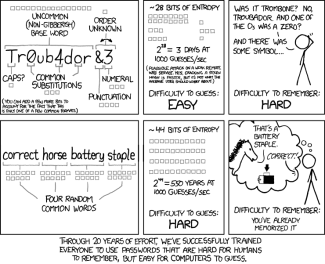

User Authentication: Passwords
Table of Contents
Abstract: This chapter is about how computer systems authenticate users. We focus on the password system of Linux in detail and that of Windows briefly. Cryptography forms the backbone of any password system. We sketch the password cracking procedures and describe a lab experiment that uses well-known carcking tools.
1 User Authentication Approaches
Authentication of Users, Services, Servers, Documents, … is a corner stone of computer security.
Is there a computer system that has no user authentication at all? This is not an intrinsic property of old PCs running older OS, but the result of decisions made regarding the control of access. (i) Systems that contain "valuable" resources wish to grant different degrees of access to different users. (ii) Systems that can become pawns ("pwned") in a larger scheme of malicious activities. This makes it necessary that a user authenticate himself.
User authentication, on ordinary computer systems, is almost always by a password. As long as the user has given the right password for Joe User, most systems accept the user as Joe. This widespread use of passwords is mostly because the technology for using other methods, such as biometrics, is far too expensive. The password method fails mostly because people do not carefully chose passwords, and also because there are ingenious and computationally extensive techniques that can guess a password.
"Over the Internet, no one knows you're a dog." – Anonymous. This joke illustrates a problem that the same password is used whether you are logging on the console or remotely logging in from a thousand miles.
All approaches for human authentication rely on one or more of the following:
1.1 What You Know
Something you know (e.g., a password). Unfortunately, "Axiom: It is beyond the capabilities of the human brain to remember enough strong passwords" – source unknown. And if you write it down, then other people might find it.
The term "CAPTCHA" is an acronym for "Completely Automated Public Turing test to tell Computers and Humans Apart". It is a challenge-response system. Its purpose is to determine if the response it receives is produced by a human or a robot script. The challenge is usually to present a highly distorted/ segmented/ crowded image of two words (typically accompanied by a voice recording) and the user is expected to type it out.
1.2 What You Have
Something you have (e.g., Security Tokens, Security Smart Cards) with you can be used to authenticate. Of course, it might get stolen. The transmission from the "reading" device to the authenticator is assumed to be "unbreakable".
1.3 What You Are
Several laptops, and iPhone (2013) have incorporated finger print scanners. Unfortunately, biometric sensors are expensive and the accuracy is yet to be widely tested. There are proposals on face recognition (http://en.wikipedia.org/ wiki/ VeriFace), voice recognition, etc. DARPA wishes "to turn humans into passwords" by capturing what they have "done" on the computer system; read http://www.nationaldefensemagazine.org/ archive/ 2012/ January/ Pages/ DARPAtoTurnHumansIntoPasswords.aspx
1.4 Password Verification Services
Password verification is now increasingly out-sourced. Facebook, Google, et al. provide OpenID service. OpenID is an open API standard between the ID provider and the OpenID acceptor. Visit http://www.openauthentication.org/
2 Choosing Good Passwords
The goal is to make password cracking difficult.
1997.01.02, PA News: "A recent survey by Compaq in the financial district of London showed that poor choices are the norm for computer passwords there. A staggering 82% of the respondents said they used, in order of preference, "a sexual position or abusive name for the boss" (30%), their partner's name or nickname (16%), the name of their favorite holiday destination (15%), sports team or player (13%), and whatever they saw first on their desk (8%)."
2.1 DOs and DONTs
Don't use the following for passwords: Your first name. Your last name. Your login name. Your pet's name. Names and birth dates of spouses, friends, relatives and friends. Any name at all. SS number. House number. Telephone number. Your bank PIN. Any password shorter than six characters.
Don't use the same password for all your accounts. An attacker who broke into one account usually discovers these other accounts by going through the memoranda that the user keeps in his files as well as by running keystroke loggers or simple sniffers.
Do use passwords of six characters or more. Use a combination of letters, numbers, and special characters. E.g., the following advice is found on the web.
- Think of a memorable phrase, such as "over the hills and far away, to grand mothers house we go."
- Next, turn it into an acronym (including the punctuation):
othafa,tgmhwg. - Add complexity by substituting numbers and symbols for letters in
the acronym. For example, substitute 0 for o, 3 for e, 7 for t and
the at symbol (@) for a:
07h@f@,7gmhwg. - Add more complexity by capitalizing at least one letter,
such as H.
07H@f@,7gmHwg. - Finally, do not use the example password above.
Of course, we must be aware of password cracking/stealing procedures in choosing passwords.
2.2 Bad Common Practices
Most passwords are typed by real humans in real time. It is unreasonable to expect that people will choose either long passwords ("pass phrases") or difficult passwords. Any requirement that ultimately causes people to write passwords down on paper or in a file defeats it.
This obvious point is lost on most system administrators and auditors. E.g., consider the following guidelines:
"In addition to the password requirements below, please also remember that your password is case sensitive and you should always change your stored password on any mobile devices you use.
- The password length must be 8 to 14
- The password must contain a letter.
- The password must contain at least one of these special characters:0123456789()–!$
- Do NOT use names or common words in the dictionary.
- Do NOT use the following symbols %#.@
- Do NOT use the last four digits of your SSN.
- Do NOT use your CAMPUS Account username, your first name, or your last name.
- Do NOT use 3 or more repeated (i.e., aaa or 111) or consecutive (i.e., abc or 123) characters.
Frequently, the recycling of previously used passwords is forbidden. This implies that the old passwords are stored somewhere. If and when that system is intruded, not only the current passwords but all the old passwords are revealed. We must realize that many users use the same passwords on multiple systems.
2.3 Password Strength Metrics

Figure 1: XKCD on Password Strength
3 One Time Password (OTP) Authentication
Because of the "human issues" (referred to above as wetware) involved, a password that can be used only once is better. This OTP is generated from a secret phrase that the user remembers or holds in a tiny device, and a next-use one time password is randomly generated. OTP provides protection from eavesdropping, and dictionary attacks. No secret algorithms are used and no secrets are stored on host. See RFC 2289 for further details of OTP.
There are many implementations of OTP. E.g., apt-get install
donkey otp otpw yubiserver on Ubuntu.
http://linotp.org/ " http://linotp.org/ Smartphone
apps for OTP. Android OATH tokens.
To make the experience of using OTP concrete, we describe briefly
the procedure to login to a machine S that supports S/Key OTP.
(That is, the ssh, login, su and other
password-requiring programs on S are OTP-based programs.)
- Initialize S/Key. (The
donkeyis an alternative for S/KEY's commands.) E.g., calculate ten OTPs at once:
% donkey -n 10 -f md5 80 is12345 Enter passphrase : xxxxxxxxxxxxxxxxxxxxxxx 71: RAG GLOB REAL BRAD RUNS QUAD 72: GAY GUN DRAB FOR NECK MILL 73: CLAY YARD DUSK LOY DUNE CAL 74: DING SLOT SOAR WILD LOST DOE 75: SAT WEST WEAN MAD NAVE SLIM 76: MAST KNOT JAIL FIGS EDEN HE 77: KILL COOT SNOB SAND TESS HAY 78: CORE VASE SHAM AFAR LASS LACK 79: MID EAT DUST OFF DOCK ARAB 80: JOEL RAVE SWAY APS COL KUDO
The secret pass phrase (shown as xxx…) is typed on the
local machine. The is12345 is the seed (which is
sometimes, confusingly, called a "key") consisting of two
letters and five digits. The iteration count, in the example
80, is a number between 1 and 100. The passphrase can be
anything, but ought to be 5 words. Lower/Upper case
matters.
The seed and pass phrase strings are passed through one of MD4, MD5 or SHA1, chosen by the user. It is repeatedly "folded" 80 times (in this example). The server stores the final hash (a 64-bit number), the seed, the iteration count, and the sequence number (80 now), in the server's S/Key database. The pass phrase is not stored. Even if someone gains access to the S/Key database, they will need to reverse the hash to find the next OTP. A simple algorithm "translates" the 64-bit hash into six words, as shown above.
- Run the above command on S after logging into S using your
existing login procedure. You have just set up OTP good for
80 uses.1.
When you wish to login to the server, the server provides a
challenge, which consists of the chosen hash, the seed and
a next-lower sequence number, 79. The user goes through the
same procedure used to produce the initial step and hashes it
79 times. The resulting 64-bit hash is the OTP to be supplied
in this login. Note that this will not be the same as the
hash stored in the S/Key database, which has been hashed 80
times. The server hashes the supplied password one more time.
If it matches the stored hash, the user is authenticated. The
server updates the databse with the supplied password and the
next-lower sequence number (79) for use in the next login.
After 80 uses, the user must re-initialise with a new seed, and optionally a new pass phrase.
To login via s/key in the future, paste "80 is12345" into the s/key calculator (donkey) running on local machine. Type in your passphrase. This generates the response on the local screen. Paste the response into the ssh, telnet-ssl or ftp-ssl window to login to S.
4 Two-Factor Authentication
Multi-factor authentication provides additional layers of security on top of password protection. Suppose your username/password became known. To access the system you would need to submit other "tokens/keys". Multi-factor authentication requires two or more of the three factors that you know/have/are. The password has been the classical "you know" part. What "you are" are the biometric factors. The what "you have" category includes various hardware (e.g., http://www.yubico.com/yubikey" yubi key ) or software tokens. There are also several smart phone two-factor apps.
5 References
- Simson Garfinkel, Gene Spafford, Practical Unix and Internet Security, O'Reilly & Associates; Chapter on Defending Your Accounts. The book is on WSU Safari OnLine. For 4xxx: Required Reading. For 3900: Recommended Reading.
- Prabhaker Mateti, Cryptography, A lecture from Computer Security course. 2013. For 4xxx: Required Reading. For 3900: Recommended Reading.
- Password Cracking FAQ, http://www.password-crackers.com/ en/ articles/ 12/ Also has links to many down loadable cracking tools. Recommended Reading
- N. Haller, C. Metz, P. Nesser, M. Straw, "A One-Time Password System," RFC 2289, February 1998. http://www.rfc-editor.org/ rfc/ rfc2289.txt Reference.
- http://www.linotp.org/, "LinOTP is an open solution for strong two-factor authentication with One Time Passwords." Recommended Reading
- http://www.piotrbania.com/all/kon-boot/ "Kon-boot is a chain loader that boots into Windows or Linux and sets up "hooks" at the kernel level that bypasses password checking." Recommended Visit.
- Bryan Ericson, Introduction to PAM, Phrack magazine, Volume 0xa, Issue 0x38, Article p56-0x0d, May 2000. Recommended Reading.
- Joseph Bonneau, Cormac Herley, Paul C. van Oorschot, and Frank Stajano, "The quest to replace passwords: a framework for comparative evaluation of Web authentication schemes", IEEE Security and Privacy Symposium, May 2012. Recommended Reading
- Fred B. Schneider, "Something You Know, Have, or Are", http://www.cs.cornell.edu/ courses/ cs513/ 2005fa/ nnlauthpeople.html, 2005. Recommended Reading